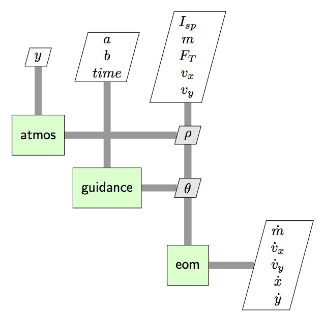

SSTO Lunar Ascent with Linear Tangent Guidance#
The following example implements a minimum time, single-stage to orbit ascent problem for launching from the lunar surface. Unlike the SSTO Earth Ascent example, here we use knowledge of the solution to simplify the optimization.
Instead of optimizing the thrust angle at any point in time as a dynamic control, we use our knowledge that the form of the solution is a linear tangent. See section 4.6 of Longuski, Guzmán, and Prussing [ALGuzmanP14] for more explanation. In short, we’ve simplified the problem by finding the optimal value of \(\theta\) at many points into optimizing the value of just two scalar parameters, \(a\) and \(b\).
Implementing this modified control scheme requires only a few changes. Rather than declaring \(\theta\) as a controllable parameter for the ODE system, we implement a new component, LinearTangentGuidanceComp that accepts \(a\) and \(b\) as parameters to be optimized. It calculates \(\theta\), which is then connected to the equations of motion component.
Extended Design Structure Matrix#

In the XDSM for the ODE system for the SSTO linear tangent problem, the only significant change is that we have a new component, guidance, which accepts \(a\), \(b\), and \(time\), and computes \(\theta\).
Solving the problem#
import numpy as np
import matplotlib.pyplot as plt
import openmdao.api as om
import dymos as dm
g = 1.61544 # lunar gravity, m/s**2
class LaunchVehicle2DEOM(om.ExplicitComponent):
"""
Simple 2D Cartesian Equations of Motion for a launch vehicle subject to thrust and drag.
"""
def initialize(self):
self.options.declare('num_nodes', types=int)
def setup(self):
nn = self.options['num_nodes']
# Inputs
self.add_input('vx',
val=np.zeros(nn),
desc='x velocity',
units='m/s')
self.add_input('vy',
val=np.zeros(nn),
desc='y velocity',
units='m/s')
self.add_input('m',
val=np.zeros(nn),
desc='mass',
units='kg')
self.add_input('theta',
val=np.zeros(nn),
desc='pitch angle',
units='rad')
self.add_input('thrust',
val=2100000 * np.ones(nn),
desc='thrust',
units='N')
self.add_input('Isp',
val=265.2 * np.ones(nn),
desc='specific impulse',
units='s')
# Outputs
self.add_output('xdot',
val=np.zeros(nn),
desc='velocity component in x',
units='m/s')
self.add_output('ydot',
val=np.zeros(nn),
desc='velocity component in y',
units='m/s')
self.add_output('vxdot',
val=np.zeros(nn),
desc='x acceleration magnitude',
units='m/s**2')
self.add_output('vydot',
val=np.zeros(nn),
desc='y acceleration magnitude',
units='m/s**2')
self.add_output('mdot',
val=np.zeros(nn),
desc='mass rate of change',
units='kg/s')
# Setup partials
ar = np.arange(self.options['num_nodes'])
self.declare_partials(of='xdot', wrt='vx', rows=ar, cols=ar, val=1.0)
self.declare_partials(of='ydot', wrt='vy', rows=ar, cols=ar, val=1.0)
self.declare_partials(of='vxdot', wrt='vx', rows=ar, cols=ar)
self.declare_partials(of='vxdot', wrt='m', rows=ar, cols=ar)
self.declare_partials(of='vxdot', wrt='theta', rows=ar, cols=ar)
self.declare_partials(of='vxdot', wrt='thrust', rows=ar, cols=ar)
self.declare_partials(of='vydot', wrt='m', rows=ar, cols=ar)
self.declare_partials(of='vydot', wrt='theta', rows=ar, cols=ar)
self.declare_partials(of='vydot', wrt='vy', rows=ar, cols=ar)
self.declare_partials(of='vydot', wrt='thrust', rows=ar, cols=ar)
self.declare_partials(of='mdot', wrt='thrust', rows=ar, cols=ar)
self.declare_partials(of='mdot', wrt='Isp', rows=ar, cols=ar)
def compute(self, inputs, outputs):
theta = inputs['theta']
cos_theta = np.cos(theta)
sin_theta = np.sin(theta)
vx = inputs['vx']
vy = inputs['vy']
m = inputs['m']
F_T = inputs['thrust']
Isp = inputs['Isp']
outputs['xdot'] = vx
outputs['ydot'] = vy
outputs['vxdot'] = F_T * cos_theta / m
outputs['vydot'] = F_T * sin_theta / m - g
outputs['mdot'] = -F_T / (g * Isp)
def compute_partials(self, inputs, jacobian):
theta = inputs['theta']
cos_theta = np.cos(theta)
sin_theta = np.sin(theta)
m = inputs['m']
F_T = inputs['thrust']
Isp = inputs['Isp']
# jacobian['vxdot', 'vx'] = -CDA * rho * vx / m
jacobian['vxdot', 'm'] = -(F_T * cos_theta) / m ** 2
jacobian['vxdot', 'theta'] = -(F_T / m) * sin_theta
jacobian['vxdot', 'thrust'] = cos_theta / m
# jacobian['vydot', 'vy'] = -CDA * rho * vy / m
jacobian['vydot', 'm'] = -(F_T * sin_theta) / m ** 2
jacobian['vydot', 'theta'] = (F_T / m) * cos_theta
jacobian['vydot', 'thrust'] = sin_theta / m
jacobian['mdot', 'thrust'] = -1.0 / (g * Isp)
jacobian['mdot', 'Isp'] = F_T / (g * Isp ** 2)
class LinearTangentGuidanceComp(om.ExplicitComponent):
""" Compute pitch angle from static controls governing linear expression for
pitch angle tangent as function of time.
"""
def initialize(self):
self.options.declare('num_nodes', types=int)
def setup(self):
nn = self.options['num_nodes']
self.add_input('a_ctrl',
val=np.zeros(nn),
desc='linear tangent slope',
units='1/s')
self.add_input('b_ctrl',
val=np.zeros(nn),
desc='tangent of theta at t=0',
units=None)
self.add_input('time_phase',
val=np.zeros(nn),
desc='time',
units='s')
self.add_output('theta',
val=np.zeros(nn),
desc='pitch angle',
units='rad')
# Setup partials
arange = np.arange(self.options['num_nodes'])
self.declare_partials(of='theta', wrt='a_ctrl', rows=arange, cols=arange, val=1.0)
self.declare_partials(of='theta', wrt='b_ctrl', rows=arange, cols=arange, val=1.0)
self.declare_partials(of='theta', wrt='time_phase', rows=arange, cols=arange, val=1.0)
def compute(self, inputs, outputs):
a = inputs['a_ctrl']
b = inputs['b_ctrl']
t = inputs['time_phase']
outputs['theta'] = np.arctan(a * t + b)
def compute_partials(self, inputs, jacobian):
a = inputs['a_ctrl']
b = inputs['b_ctrl']
t = inputs['time_phase']
x = a * t + b
denom = x ** 2 + 1.0
jacobian['theta', 'a_ctrl'] = t / denom
jacobian['theta', 'b_ctrl'] = 1.0 / denom
jacobian['theta', 'time_phase'] = a / denom
class LaunchVehicleLinearTangentODE(om.Group):
"""
The LaunchVehicleLinearTangentODE for this case consists of a guidance component and
the EOM. Guidance is simply an OpenMDAO ExecComp which computes the arctangent of the
tan_theta variable.
"""
def initialize(self):
self.options.declare('num_nodes', types=int,
desc='Number of nodes to be evaluated in the RHS')
def setup(self):
nn = self.options['num_nodes']
self.add_subsystem('guidance', LinearTangentGuidanceComp(num_nodes=nn))
self.add_subsystem('eom', LaunchVehicle2DEOM(num_nodes=nn))
self.connect('guidance.theta', 'eom.theta')
#
# Setup and solve the optimal control problem
#
p = om.Problem(model=om.Group())
p.driver = om.pyOptSparseDriver()
p.driver.declare_coloring()
traj = dm.Trajectory()
p.model.add_subsystem('traj', traj)
phase = dm.Phase(ode_class=LaunchVehicleLinearTangentODE,
transcription=dm.GaussLobatto(num_segments=10, order=5, compressed=True))
traj.add_phase('phase0', phase)
phase.set_time_options(fix_initial=True, duration_bounds=(10, 1000),
targets=['guidance.time_phase'])
phase.add_state('x', fix_initial=True, lower=0, rate_source='eom.xdot', units='m')
phase.add_state('y', fix_initial=True, lower=0, rate_source='eom.ydot', units='m')
phase.add_state('vx', fix_initial=True, lower=0, rate_source='eom.vxdot', targets=['eom.vx'], units='m/s')
phase.add_state('vy', fix_initial=True, rate_source='eom.vydot', targets=['eom.vy'], units='m/s')
phase.add_state('m', fix_initial=True, rate_source='eom.mdot', targets=['eom.m'], units='kg')
phase.add_boundary_constraint('y', loc='final', equals=1.85E5, linear=True)
phase.add_boundary_constraint('vx', loc='final', equals=1627.0)
phase.add_boundary_constraint('vy', loc='final', equals=0)
phase.add_parameter('a_ctrl', units='1/s', opt=True, targets=['guidance.a_ctrl'])
phase.add_parameter('b_ctrl', units=None, opt=True, targets=['guidance.b_ctrl'])
phase.add_parameter('thrust', units='N', opt=False, val=3.0 * 50000.0 * 1.61544, targets=['eom.thrust'])
phase.add_parameter('Isp', units='s', opt=False, val=1.0E6, targets=['eom.Isp'])
phase.add_objective('time', index=-1, scaler=0.01)
p.model.linear_solver = om.DirectSolver()
phase.add_timeseries_output('guidance.theta', units='deg')
p.setup(check=True)
phase.set_time_val(initial=0.0, duration=500.0)
phase.set_state_val('x', [0, 350000.0])
phase.set_state_val('y', [0, 185000.0])
phase.set_state_val('vx', [0, 1627.0])
phase.set_state_val('vy', [1.0E-6, 0.0])
phase.set_state_val('m', 50000)
phase.set_parameter_val('a_ctrl', -0.01)
phase.set_parameter_val('b_ctrl', 3.0)
dm.run_problem(p, simulate=True)
INFO: checking out_of_order...
INFO: out_of_order check complete (0.000614 sec).
INFO: checking system...
INFO: system check complete (0.000023 sec).
INFO: checking solvers...
INFO:
'rhs_checking' is disabled for 'DirectSolver in <model> <class Group>', but that solver has redundant adjoint solves. If it is expensive to compute derivatives for this solver, turning on 'rhs_checking' may improve performance.
INFO: solvers check complete (0.001009 sec).
INFO: checking dup_inputs...
INFO: dup_inputs check complete (0.000135 sec).
INFO: checking missing_recorders...
INFO: missing_recorders check complete (0.000002 sec).
INFO: checking unserializable_options...
INFO: unserializable_options check complete (0.001301 sec).
INFO: checking comp_has_no_outputs...
INFO: comp_has_no_outputs check complete (0.000040 sec).
INFO: checking auto_ivc_warnings...
INFO: auto_ivc_warnings check complete (0.000002 sec).
/home/runner/work/dymos/dymos/.openmdao-pixi/.pixi/envs/dev/lib/python3.13/site-packages/openmdao/utils/relevance.py:1234: OpenMDAOWarning:The top level group has a nonlinear solver that computes gradients, so the entire model will be included in the optimization iteration.
Jacobian shape: (103, 103) (11.34% nonzero)
FWD solves: 17 REV solves: 0
Total colors vs. total size: 17 vs 103 (83.50% improvement)
Sparsity computed using tolerance: 1e-25.
Dense total jacobian for Problem 'problem' was computed 3 times.
Time to compute sparsity: 0.0380 sec
Time to compute coloring: 0.1089 sec
Memory to compute coloring: 0.5000 MB
Coloring created on: 2025-12-22 16:16:27
Optimization Problem -- Optimization using pyOpt_sparse
================================================================================
Objective Function: _objfunc
Solution:
--------------------------------------------------------------------------------
Total Time: 0.3896
User Objective Time : 0.0067
User Sensitivity Time : 0.3531
Interface Time : 0.0156
Opt Solver Time: 0.0141
Calls to Objective Function : 6
Calls to Sens Function : 5
Objectives
Index Name Value
0 traj.phase0.t 4.817168E+00
Variables (c - continuous, i - integer, d - discrete)
Index Name Type Lower Bound Value Upper Bound Status
0 traj.phase0.t_duration_0 c 1.000000E+01 4.817168E+02 1.000000E+03
1 traj.phase0.parameters:a_ctrl_0 c -1.000000E+21 -8.280511E-03 1.000000E+21
2 traj.phase0.parameters:b_ctrl_0 c -1.000000E+21 2.747399E+00 1.000000E+21
3 traj.phase0.states:x_0 c 0.000000E+00 4.914075E+02 1.000000E+21
4 traj.phase0.states:x_1 c 0.000000E+00 2.010769E+03 1.000000E+21
5 traj.phase0.states:x_2 c 0.000000E+00 4.632596E+03 1.000000E+21
6 traj.phase0.states:x_3 c 0.000000E+00 8.441819E+03 1.000000E+21
7 traj.phase0.states:x_4 c 0.000000E+00 1.353576E+04 1.000000E+21
8 traj.phase0.states:x_5 c 0.000000E+00 2.002641E+04 1.000000E+21
9 traj.phase0.states:x_6 c 0.000000E+00 2.804305E+04 1.000000E+21
10 traj.phase0.states:x_7 c 0.000000E+00 3.773482E+04 1.000000E+21
11 traj.phase0.states:x_8 c 0.000000E+00 4.927264E+04 1.000000E+21
12 traj.phase0.states:x_9 c 0.000000E+00 6.284916E+04 1.000000E+21
13 traj.phase0.states:x_10 c 0.000000E+00 7.867365E+04 1.000000E+21
14 traj.phase0.states:x_11 c 0.000000E+00 9.695801E+04 1.000000E+21
15 traj.phase0.states:x_12 c 0.000000E+00 1.178897E+05 1.000000E+21
16 traj.phase0.states:x_13 c 0.000000E+00 1.415942E+05 1.000000E+21
17 traj.phase0.states:x_14 c 0.000000E+00 1.681011E+05 1.000000E+21
18 traj.phase0.states:x_15 c 0.000000E+00 1.973350E+05 1.000000E+21
19 traj.phase0.states:x_16 c 0.000000E+00 2.291382E+05 1.000000E+21
20 traj.phase0.states:x_17 c 0.000000E+00 2.633083E+05 1.000000E+21
21 traj.phase0.states:x_18 c 0.000000E+00 2.996321E+05 1.000000E+21
22 traj.phase0.states:x_19 c 0.000000E+00 3.379071E+05 1.000000E+21
23 traj.phase0.states:y_0 c 0.000000E+00 8.484836E+02 1.000000E+21
24 traj.phase0.states:y_1 c 0.000000E+00 3.376666E+03 1.000000E+21
25 traj.phase0.states:y_2 c 0.000000E+00 7.554202E+03 1.000000E+21
26 traj.phase0.states:y_3 c 0.000000E+00 1.334336E+04 1.000000E+21
27 traj.phase0.states:y_4 c 0.000000E+00 2.069660E+04 1.000000E+21
28 traj.phase0.states:y_5 c 0.000000E+00 2.955320E+04 1.000000E+21
29 traj.phase0.states:y_6 c 0.000000E+00 3.983444E+04 1.000000E+21
30 traj.phase0.states:y_7 c 0.000000E+00 5.143680E+04 1.000000E+21
31 traj.phase0.states:y_8 c 0.000000E+00 6.422234E+04 1.000000E+21
32 traj.phase0.states:y_9 c 0.000000E+00 7.800565E+04 1.000000E+21
33 traj.phase0.states:y_10 c 0.000000E+00 9.253734E+04 1.000000E+21
34 traj.phase0.states:y_11 c 0.000000E+00 1.074866E+05 1.000000E+21
35 traj.phase0.states:y_12 c 0.000000E+00 1.224307E+05 1.000000E+21
36 traj.phase0.states:y_13 c 0.000000E+00 1.368636E+05 1.000000E+21
37 traj.phase0.states:y_14 c 0.000000E+00 1.502346E+05 1.000000E+21
38 traj.phase0.states:y_15 c 0.000000E+00 1.620065E+05 1.000000E+21
39 traj.phase0.states:y_16 c 0.000000E+00 1.717075E+05 1.000000E+21
40 traj.phase0.states:y_17 c 0.000000E+00 1.789562E+05 1.000000E+21
41 traj.phase0.states:y_18 c 0.000000E+00 1.834600E+05 1.000000E+21
42 traj.phase0.states:y_19 c 0.000000E+00 1.850000E+05 1.000000E+21
43 traj.phase0.states:vx_0 c 0.000000E+00 4.125858E+01 1.000000E+21
44 traj.phase0.states:vx_1 c 0.000000E+00 8.541812E+01 1.000000E+21
45 traj.phase0.states:vx_2 c 0.000000E+00 1.328751E+02 1.000000E+21
46 traj.phase0.states:vx_3 c 0.000000E+00 1.841006E+02 1.000000E+21
47 traj.phase0.states:vx_4 c 0.000000E+00 2.396544E+02 1.000000E+21
48 traj.phase0.states:vx_5 c 0.000000E+00 3.001984E+02 1.000000E+21
49 traj.phase0.states:vx_6 c 0.000000E+00 3.665047E+02 1.000000E+21
50 traj.phase0.states:vx_7 c 0.000000E+00 4.394465E+02 1.000000E+21
51 traj.phase0.states:vx_8 c 0.000000E+00 5.199484E+02 1.000000E+21
52 traj.phase0.states:vx_9 c 0.000000E+00 6.088531E+02 1.000000E+21
53 traj.phase0.states:vx_10 c 0.000000E+00 7.066397E+02 1.000000E+21
54 traj.phase0.states:vx_11 c 0.000000E+00 8.129513E+02 1.000000E+21
55 traj.phase0.states:vx_12 c 0.000000E+00 9.260354E+02 1.000000E+21
56 traj.phase0.states:vx_13 c 0.000000E+00 1.042511E+03 1.000000E+21
57 traj.phase0.states:vx_14 c 0.000000E+00 1.157984E+03 1.000000E+21
58 traj.phase0.states:vx_15 c 0.000000E+00 1.268376E+03 1.000000E+21
59 traj.phase0.states:vx_16 c 0.000000E+00 1.371019E+03 1.000000E+21
60 traj.phase0.states:vx_17 c 0.000000E+00 1.464847E+03 1.000000E+21
61 traj.phase0.states:vx_18 c 0.000000E+00 1.549945E+03 1.000000E+21
62 traj.phase0.states:vx_19 c 0.000000E+00 1.627000E+03 1.000000E+21
63 traj.phase0.states:vy_0 c -1.000000E+21 7.028492E+01 1.000000E+21
64 traj.phase0.states:vy_1 c -1.000000E+21 1.394373E+02 1.000000E+21
65 traj.phase0.states:vy_2 c -1.000000E+21 2.071905E+02 1.000000E+21
66 traj.phase0.states:vy_3 c -1.000000E+21 2.731933E+02 1.000000E+21
67 traj.phase0.states:vy_4 c -1.000000E+21 3.369762E+02 1.000000E+21
68 traj.phase0.states:vy_5 c -1.000000E+21 3.979035E+02 1.000000E+21
69 traj.phase0.states:vy_6 c -1.000000E+21 4.551033E+02 1.000000E+21
70 traj.phase0.states:vy_7 c -1.000000E+21 5.073683E+02 1.000000E+21
71 traj.phase0.states:vy_8 c -1.000000E+21 5.530247E+02 1.000000E+21
72 traj.phase0.states:vy_9 c -1.000000E+21 5.897782E+02 1.000000E+21
73 traj.phase0.states:vy_10 c -1.000000E+21 6.145998E+02 1.000000E+21
74 traj.phase0.states:vy_11 c -1.000000E+21 6.238029E+02 1.000000E+21
75 traj.phase0.states:vy_12 c -1.000000E+21 6.135685E+02 1.000000E+21
76 traj.phase0.states:vy_13 c -1.000000E+21 5.810350E+02 1.000000E+21
77 traj.phase0.states:vy_14 c -1.000000E+21 5.254906E+02 1.000000E+21
78 traj.phase0.states:vy_15 c -1.000000E+21 4.487217E+02 1.000000E+21
79 traj.phase0.states:vy_16 c -1.000000E+21 3.541772E+02 1.000000E+21
80 traj.phase0.states:vy_17 c -1.000000E+21 2.457161E+02 1.000000E+21
81 traj.phase0.states:vy_18 c -1.000000E+21 1.267600E+02 1.000000E+21
82 traj.phase0.states:vy_19 c -1.000000E+21 0.000000E+00 1.000000E+21
83 traj.phase0.states:m_0 c -1.000000E+21 4.999639E+04 1.000000E+21
84 traj.phase0.states:m_1 c -1.000000E+21 4.999277E+04 1.000000E+21
85 traj.phase0.states:m_2 c -1.000000E+21 4.998916E+04 1.000000E+21
86 traj.phase0.states:m_3 c -1.000000E+21 4.998555E+04 1.000000E+21
87 traj.phase0.states:m_4 c -1.000000E+21 4.998194E+04 1.000000E+21
88 traj.phase0.states:m_5 c -1.000000E+21 4.997832E+04 1.000000E+21
89 traj.phase0.states:m_6 c -1.000000E+21 4.997471E+04 1.000000E+21
90 traj.phase0.states:m_7 c -1.000000E+21 4.997110E+04 1.000000E+21
91 traj.phase0.states:m_8 c -1.000000E+21 4.996748E+04 1.000000E+21
92 traj.phase0.states:m_9 c -1.000000E+21 4.996387E+04 1.000000E+21
93 traj.phase0.states:m_10 c -1.000000E+21 4.996026E+04 1.000000E+21
94 traj.phase0.states:m_11 c -1.000000E+21 4.995665E+04 1.000000E+21
95 traj.phase0.states:m_12 c -1.000000E+21 4.995303E+04 1.000000E+21
96 traj.phase0.states:m_13 c -1.000000E+21 4.994942E+04 1.000000E+21
97 traj.phase0.states:m_14 c -1.000000E+21 4.994581E+04 1.000000E+21
98 traj.phase0.states:m_15 c -1.000000E+21 4.994219E+04 1.000000E+21
99 traj.phase0.states:m_16 c -1.000000E+21 4.993858E+04 1.000000E+21
100 traj.phase0.states:m_17 c -1.000000E+21 4.993497E+04 1.000000E+21
101 traj.phase0.states:m_18 c -1.000000E+21 4.993136E+04 1.000000E+21
102 traj.phase0.states:m_19 c -1.000000E+21 4.992774E+04 1.000000E+21
Constraints (i - inequality, e - equality)
Index Name Type Lower Value Upper Status Lagrange Multiplier (N/A)
0 traj.phase0.y[final] e 1.850000E+05 1.850000E+05 1.850000E+05 9.00000E+100
1 traj.phase0.vx[final] e 1.627000E+03 1.627000E+03 1.627000E+03 9.00000E+100
2 traj.phase0.vy[final] e 0.000000E+00 0.000000E+00 0.000000E+00 9.00000E+100
3 traj.phase0.collocation_constraint.defects:x e 0.000000E+00 8.557009E-14 0.000000E+00 9.00000E+100
4 traj.phase0.collocation_constraint.defects:x e 0.000000E+00 3.422804E-13 0.000000E+00 9.00000E+100
5 traj.phase0.collocation_constraint.defects:x e 0.000000E+00 6.845607E-13 0.000000E+00 9.00000E+100
6 traj.phase0.collocation_constraint.defects:x e 0.000000E+00 6.845607E-13 0.000000E+00 9.00000E+100
7 traj.phase0.collocation_constraint.defects:x e 0.000000E+00 4.791925E-12 0.000000E+00 9.00000E+100
8 traj.phase0.collocation_constraint.defects:x e 0.000000E+00 -1.369121E-12 0.000000E+00 9.00000E+100
9 traj.phase0.collocation_constraint.defects:x e 0.000000E+00 -1.369121E-12 0.000000E+00 9.00000E+100
10 traj.phase0.collocation_constraint.defects:x e 0.000000E+00 -6.845607E-12 0.000000E+00 9.00000E+100
11 traj.phase0.collocation_constraint.defects:x e 0.000000E+00 8.214729E-12 0.000000E+00 9.00000E+100
12 traj.phase0.collocation_constraint.defects:x e 0.000000E+00 -2.738243E-12 0.000000E+00 9.00000E+100
13 traj.phase0.collocation_constraint.defects:x e 0.000000E+00 5.476486E-12 0.000000E+00 9.00000E+100
14 traj.phase0.collocation_constraint.defects:x e 0.000000E+00 1.369121E-11 0.000000E+00 9.00000E+100
15 traj.phase0.collocation_constraint.defects:x e 0.000000E+00 -1.916770E-11 0.000000E+00 9.00000E+100
16 traj.phase0.collocation_constraint.defects:x e 0.000000E+00 5.476486E-12 0.000000E+00 9.00000E+100
17 traj.phase0.collocation_constraint.defects:x e 0.000000E+00 -5.476486E-12 0.000000E+00 9.00000E+100
18 traj.phase0.collocation_constraint.defects:x e 0.000000E+00 -3.285892E-11 0.000000E+00 9.00000E+100
19 traj.phase0.collocation_constraint.defects:x e 0.000000E+00 -6.024134E-11 0.000000E+00 9.00000E+100
20 traj.phase0.collocation_constraint.defects:x e 0.000000E+00 9.857675E-11 0.000000E+00 9.00000E+100
21 traj.phase0.collocation_constraint.defects:x e 0.000000E+00 -5.476486E-12 0.000000E+00 9.00000E+100
22 traj.phase0.collocation_constraint.defects:x e 0.000000E+00 -3.285892E-11 0.000000E+00 9.00000E+100
23 traj.phase0.collocation_constraint.defects:y e 0.000000E+00 -3.422804E-13 0.000000E+00 9.00000E+100
24 traj.phase0.collocation_constraint.defects:y e 0.000000E+00 -1.369121E-12 0.000000E+00 9.00000E+100
25 traj.phase0.collocation_constraint.defects:y e 0.000000E+00 0.000000E+00 0.000000E+00 9.00000E+100
26 traj.phase0.collocation_constraint.defects:y e 0.000000E+00 -6.845607E-13 0.000000E+00 9.00000E+100
27 traj.phase0.collocation_constraint.defects:y e 0.000000E+00 0.000000E+00 0.000000E+00 9.00000E+100
28 traj.phase0.collocation_constraint.defects:y e 0.000000E+00 1.369121E-12 0.000000E+00 9.00000E+100
29 traj.phase0.collocation_constraint.defects:y e 0.000000E+00 5.476486E-12 0.000000E+00 9.00000E+100
30 traj.phase0.collocation_constraint.defects:y e 0.000000E+00 4.107364E-12 0.000000E+00 9.00000E+100
31 traj.phase0.collocation_constraint.defects:y e 0.000000E+00 1.095297E-11 0.000000E+00 9.00000E+100
32 traj.phase0.collocation_constraint.defects:y e 0.000000E+00 -5.476486E-12 0.000000E+00 9.00000E+100
33 traj.phase0.collocation_constraint.defects:y e 0.000000E+00 2.464419E-11 0.000000E+00 9.00000E+100
34 traj.phase0.collocation_constraint.defects:y e 0.000000E+00 -4.107364E-11 0.000000E+00 9.00000E+100
35 traj.phase0.collocation_constraint.defects:y e 0.000000E+00 0.000000E+00 0.000000E+00 9.00000E+100
36 traj.phase0.collocation_constraint.defects:y e 0.000000E+00 2.738243E-11 0.000000E+00 9.00000E+100
37 traj.phase0.collocation_constraint.defects:y e 0.000000E+00 5.476486E-12 0.000000E+00 9.00000E+100
38 traj.phase0.collocation_constraint.defects:y e 0.000000E+00 1.095297E-11 0.000000E+00 9.00000E+100
39 traj.phase0.collocation_constraint.defects:y e 0.000000E+00 -1.369121E-12 0.000000E+00 9.00000E+100
40 traj.phase0.collocation_constraint.defects:y e 0.000000E+00 -2.327507E-11 0.000000E+00 9.00000E+100
41 traj.phase0.collocation_constraint.defects:y e 0.000000E+00 -4.655013E-11 0.000000E+00 9.00000E+100
42 traj.phase0.collocation_constraint.defects:y e 0.000000E+00 8.574123E-11 0.000000E+00 9.00000E+100
43 traj.phase0.collocation_constraint.defects:vx e 0.000000E+00 -1.604439E-14 0.000000E+00 9.00000E+100
44 traj.phase0.collocation_constraint.defects:vx e 0.000000E+00 5.348131E-15 0.000000E+00 9.00000E+100
45 traj.phase0.collocation_constraint.defects:vx e 0.000000E+00 -3.208878E-14 0.000000E+00 9.00000E+100
46 traj.phase0.collocation_constraint.defects:vx e 0.000000E+00 -2.139252E-14 0.000000E+00 9.00000E+100
47 traj.phase0.collocation_constraint.defects:vx e 0.000000E+00 1.069626E-14 0.000000E+00 9.00000E+100
48 traj.phase0.collocation_constraint.defects:vx e 0.000000E+00 1.069626E-14 0.000000E+00 9.00000E+100
49 traj.phase0.collocation_constraint.defects:vx e 0.000000E+00 -3.208878E-14 0.000000E+00 9.00000E+100
50 traj.phase0.collocation_constraint.defects:vx e 0.000000E+00 6.417757E-14 0.000000E+00 9.00000E+100
51 traj.phase0.collocation_constraint.defects:vx e 0.000000E+00 9.626635E-14 0.000000E+00 9.00000E+100
52 traj.phase0.collocation_constraint.defects:vx e 0.000000E+00 -1.925327E-13 0.000000E+00 9.00000E+100
53 traj.phase0.collocation_constraint.defects:vx e 0.000000E+00 1.497477E-13 0.000000E+00 9.00000E+100
54 traj.phase0.collocation_constraint.defects:vx e 0.000000E+00 8.557009E-14 0.000000E+00 9.00000E+100
55 traj.phase0.collocation_constraint.defects:vx e 0.000000E+00 -2.139252E-13 0.000000E+00 9.00000E+100
56 traj.phase0.collocation_constraint.defects:vx e 0.000000E+00 1.925327E-13 0.000000E+00 9.00000E+100
57 traj.phase0.collocation_constraint.defects:vx e 0.000000E+00 -4.064579E-13 0.000000E+00 9.00000E+100
58 traj.phase0.collocation_constraint.defects:vx e 0.000000E+00 1.925327E-13 0.000000E+00 9.00000E+100
59 traj.phase0.collocation_constraint.defects:vx e 0.000000E+00 -8.557009E-14 0.000000E+00 9.00000E+100
60 traj.phase0.collocation_constraint.defects:vx e 0.000000E+00 -2.353178E-13 0.000000E+00 9.00000E+100
61 traj.phase0.collocation_constraint.defects:vx e 0.000000E+00 2.994953E-13 0.000000E+00 9.00000E+100
62 traj.phase0.collocation_constraint.defects:vx e 0.000000E+00 -1.069626E-14 0.000000E+00 9.00000E+100
63 traj.phase0.collocation_constraint.defects:vy e 0.000000E+00 -1.069626E-14 0.000000E+00 9.00000E+100
64 traj.phase0.collocation_constraint.defects:vy e 0.000000E+00 -1.069626E-14 0.000000E+00 9.00000E+100
65 traj.phase0.collocation_constraint.defects:vy e 0.000000E+00 -5.348131E-14 0.000000E+00 9.00000E+100
66 traj.phase0.collocation_constraint.defects:vy e 0.000000E+00 6.417757E-14 0.000000E+00 9.00000E+100
67 traj.phase0.collocation_constraint.defects:vy e 0.000000E+00 -4.278505E-14 0.000000E+00 9.00000E+100
68 traj.phase0.collocation_constraint.defects:vy e 0.000000E+00 -9.626635E-14 0.000000E+00 9.00000E+100
69 traj.phase0.collocation_constraint.defects:vy e 0.000000E+00 2.139252E-14 0.000000E+00 9.00000E+100
70 traj.phase0.collocation_constraint.defects:vy e 0.000000E+00 1.069626E-14 0.000000E+00 9.00000E+100
71 traj.phase0.collocation_constraint.defects:vy e 0.000000E+00 -4.278505E-14 0.000000E+00 9.00000E+100
72 traj.phase0.collocation_constraint.defects:vy e 0.000000E+00 4.813318E-14 0.000000E+00 9.00000E+100
73 traj.phase0.collocation_constraint.defects:vy e 0.000000E+00 3.208878E-14 0.000000E+00 9.00000E+100
74 traj.phase0.collocation_constraint.defects:vy e 0.000000E+00 -1.871846E-13 0.000000E+00 9.00000E+100
75 traj.phase0.collocation_constraint.defects:vy e 0.000000E+00 2.272956E-13 0.000000E+00 9.00000E+100
76 traj.phase0.collocation_constraint.defects:vy e 0.000000E+00 -1.443995E-13 0.000000E+00 9.00000E+100
77 traj.phase0.collocation_constraint.defects:vy e 0.000000E+00 2.139252E-14 0.000000E+00 9.00000E+100
78 traj.phase0.collocation_constraint.defects:vy e 0.000000E+00 4.278505E-14 0.000000E+00 9.00000E+100
79 traj.phase0.collocation_constraint.defects:vy e 0.000000E+00 -1.176589E-13 0.000000E+00 9.00000E+100
80 traj.phase0.collocation_constraint.defects:vy e 0.000000E+00 0.000000E+00 0.000000E+00 9.00000E+100
81 traj.phase0.collocation_constraint.defects:vy e 0.000000E+00 2.139252E-14 0.000000E+00 9.00000E+100
82 traj.phase0.collocation_constraint.defects:vy e 0.000000E+00 0.000000E+00 0.000000E+00 9.00000E+100
83 traj.phase0.collocation_constraint.defects:m e 0.000000E+00 1.957416E-12 0.000000E+00 9.00000E+100
84 traj.phase0.collocation_constraint.defects:m e 0.000000E+00 -1.259351E-11 0.000000E+00 9.00000E+100
85 traj.phase0.collocation_constraint.defects:m e 0.000000E+00 2.015176E-11 0.000000E+00 9.00000E+100
86 traj.phase0.collocation_constraint.defects:m e 0.000000E+00 -1.258950E-11 0.000000E+00 9.00000E+100
87 traj.phase0.collocation_constraint.defects:m e 0.000000E+00 9.237559E-12 0.000000E+00 9.00000E+100
88 traj.phase0.collocation_constraint.defects:m e 0.000000E+00 1.961427E-12 0.000000E+00 9.00000E+100
89 traj.phase0.collocation_constraint.defects:m e 0.000000E+00 -1.805128E-11 0.000000E+00 9.00000E+100
90 traj.phase0.collocation_constraint.defects:m e 0.000000E+00 -1.259351E-11 0.000000E+00 9.00000E+100
91 traj.phase0.collocation_constraint.defects:m e 0.000000E+00 1.957416E-12 0.000000E+00 9.00000E+100
92 traj.phase0.collocation_constraint.defects:m e 0.000000E+00 1.650968E-11 0.000000E+00 9.00000E+100
93 traj.phase0.collocation_constraint.defects:m e 0.000000E+00 -1.076712E-11 0.000000E+00 9.00000E+100
94 traj.phase0.collocation_constraint.defects:m e 0.000000E+00 1.965438E-12 0.000000E+00 9.00000E+100
95 traj.phase0.collocation_constraint.defects:m e 0.000000E+00 -7.137080E-12 0.000000E+00 9.00000E+100
96 traj.phase0.collocation_constraint.defects:m e 0.000000E+00 1.957416E-12 0.000000E+00 9.00000E+100
97 traj.phase0.collocation_constraint.defects:m e 0.000000E+00 1.105325E-11 0.000000E+00 9.00000E+100
98 traj.phase0.collocation_constraint.defects:m e 0.000000E+00 -1.259351E-11 0.000000E+00 9.00000E+100
99 traj.phase0.collocation_constraint.defects:m e 0.000000E+00 1.390514E-13 0.000000E+00 9.00000E+100
100 traj.phase0.collocation_constraint.defects:m e 0.000000E+00 1.957416E-12 0.000000E+00 9.00000E+100
101 traj.phase0.collocation_constraint.defects:m e 0.000000E+00 1.957416E-12 0.000000E+00 9.00000E+100
102 traj.phase0.collocation_constraint.defects:m e 0.000000E+00 -2.714577E-11 0.000000E+00 9.00000E+100
Exit Status
Inform Description
0 Optimization terminated successfully.
--------------------------------------------------------------------------------
Simulating trajectory traj
Done simulating trajectory traj
Problem: problem
Driver: pyOptSparseDriver
success : True
iterations : 8
runtime : 5.6702E-01 s
model_evals : 8
model_time : 6.4808E-03 s
deriv_evals : 6
deriv_time : 3.1705E-02 s
exit_status : SUCCESS
References#
James M Longuski, José J Guzmán, and John E Prussing. Optimal control with aerospace applications. Springer, 1 edition, 2014. ISBN 978-1-4939-4917-5. doi:https://doi.org/10.1007/978-1-4614-8945-0.